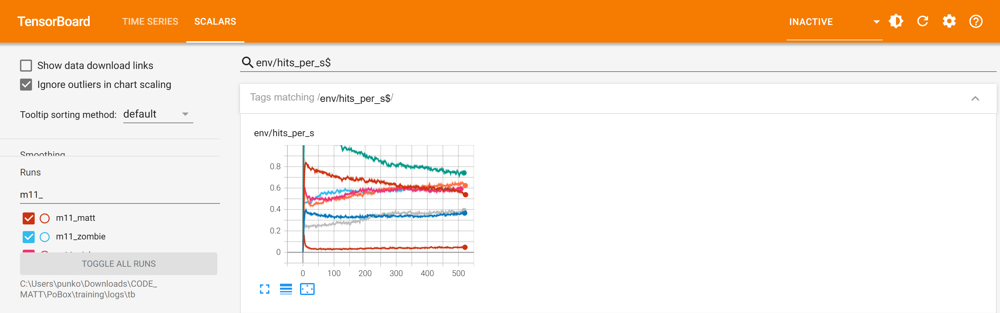
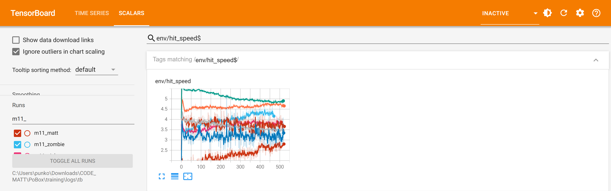
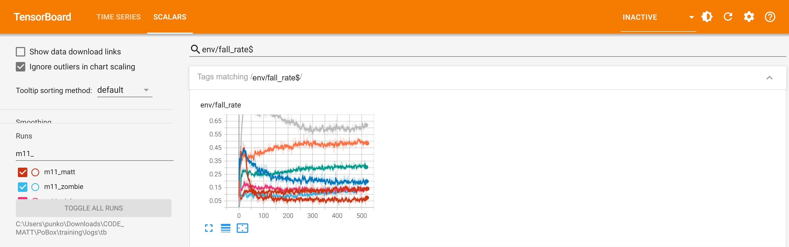

Overnight training: m11, all eight boxers
2026-10-17 23:35 to 2026-10-18 08:15, then a mixed-roster exam to 08:45 · v2 bodies · the game's punch rules · exams in C MuJoCo 3.5.0, 60 trials, 12 rounds
Exam: lines passed of six
| Boxer | m10 | m11 | Mix | Gained | Still failing / lost |
|---|---|---|---|---|---|
| Matt | 5 | 5 | 5 | carrying on 51/57 → 53/57 (passes) | attack 1.20 → 0.65/s (m11); in the mix (m10) guard: takes 0.35 head shots/s |
| Zombie | 5 | 5 | 5 | - | attack 0.72 → 0.42/s, 3.6 m/s (mark 4.0) |
| Nick | 5 | 4 | 4 | - | footing 0.11 → 2.33 (m11); mix 4.67, all against Sokol's m11 |
| Sokol | 5 | 5 | 5 | footing 1.56 → 0.89 (m11) → 0.33 in the mix (mark 0.2) | footing, by a hair |
| Kim | 4 | 3 | 3 | - | footing 2.0 → 5.4, attack 0.40 → 0.29, carrying on lost |
| Trump | 5 | 4 | 5 | - | attack 0.44 → 0.48/s (mark 0.5); m11 also fell 1.33/min |
| Grandma | 3 | 3 | 3 | footing 7.0 → 0.11 | attack 0.64 → 0.24/s; getting up still 0/60 |
| Grandpa | 2 | 4 | 4 | footing 2.7 → 0.0; getting up 24/60 → 49/60 (new get-up) | attack 0.02/s; carrying on 20/49 |
| All | 34 | 33 | 34 |
m10 is examined against the other m10 brains, m11 against the other m11 brains, and the mix (Matt, Zombie, Nick, Kim, Trump on m10;
Sokol, Grandma, Grandpa on m11; the grandparents on their new get-ups) against itself: the roster the game would get
(logs/exam_m10_NAME.json, logs/exam_m11_NAME.json, logs/exam_mix_NAME.json). Each exam's field differs,
so a line near its mark can flip on the opponents alone (Nick's falls are all against Sokol's m11).
The three charts that matter
1. Punches landed a second (env/hits_per_s), the eight m11 runs

Toddler Most of them hit a bit less often than when they started, because the other boxers got better at hitting back.
Child Matt went from 0.73 to 0.55 a second and Sokol from 1.04 to 0.74, while Zombie (0.43 → 0.59), Trump (0.47 → 0.64) and Kim (0.23 → 0.38) went up. Grandpa stayed at 0.05: he still nearly never punches.
Adult First 20 against last 20 iterations. The opponents were each one's m10 brain, which land far more than the ones m10 trained against (on Matt at the start 0.68/s against 0.45/s last night), so taking less (Matt 0.68 → 0.24/s) paid more than landing. Repeat decay 0.5 and combinations 0.25 also cut what a landed punch is worth; repeat share still rose for seven of eight and combinations stayed near 0.
2. Speed of the punches that land (env/hit_speed), m/s

Toddler We asked them to punch harder, and the ones we asked mostly did.
Child The new rule pays a slow punch less. In training Zombie went 3.4 → 4.3 m/s, Nick 3.6 → 3.9, Grandpa 1.9 → 2.7 (his mark is 3.0); Kim did not move (3.9 → 3.5).
Adult --slow-v scales a landed punch's worth by (speed / slow_v)2 below slow_v. The training gains did not carry into the exams: Zombie still lands at 3.4-3.6 m/s there and Nick at 2.9-3.2, against other opponents and without the noise the trainer acts with. The bottom line is Grandpa.
3. Falls an episode (env/fall_rate)

Toddler Most of them fell down much less by the end.
Child Grandpa fell in 37% of episodes at the start and 4% at the end, Grandma 33% → 10%. Kim went the wrong way, 48% → 60%.
Adult Fall penalty 16 and the weights on the opponents who drop them worked for the grandparents (exam footing 2.7 → 0.0 and 7.0 → 0.11 a minute) and Sokol (1.56 → 0.33 in the mix, mark 0.2). Kim trained against Nick and Sokol at weight 3 and fell more: she is the lightest drive (strength 0.71) under the hurt and body-drain rules, and needs a different fix (her footwork under the rules, or her get-up hand-over) rather than more punishment.
Compared with last night
Last night (m10, against the older brains): seven of eight gained lines, none lost one. Tonight: Grandpa +2, Matt and Sokol traded or improved within a line, Nick, Kim and Trump lost one each on their own m11 exam. Better: the get-ups (Grandpa) and footing (both grandparents, Sokol). Worse: attack, because the field got harder and the variety terms took pay away from landing. Grandma's get-up is still 0 of 60 after 2,100 iterations in all: in training she never stands unaided (bank made from only 304 states out of 9,000 knockdowns). That is her body under the rules (strength 0.53, speed limit, fatigue), not training time: owner's call (more get-up strength, or the game helping her up).
Next, if wanted
- Promote the mix (M2): Sokol m11; Grandma m11; Grandpa m11 +
u1_d9_grandpa_matt; the rest m10. Needsobs_statein the configs, PromoteBoxing, gate and parity tests, CPU Elo. - Variety: drop repeat decay back to 0.7 and pay the head instead (a
--head-w); the decay costs landing more than it buys a mix. - Grandpa's attack: a bag stage (punching a still target) before the match; in the ring he never lands enough for the pay to teach him.
- Grandma's get-up: the owner's decision above.